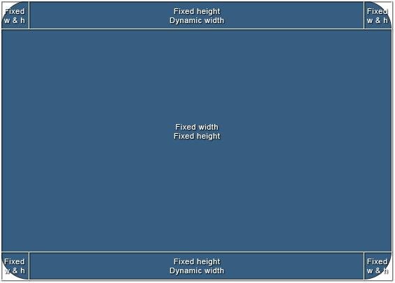
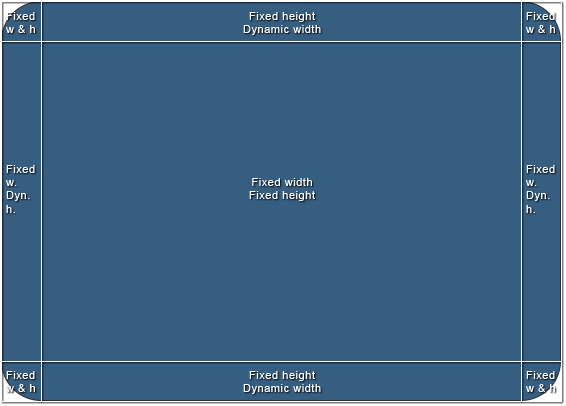

Div width 100% minus fixed amount of pixels
How can I achieve the following structure without using tables or JavaScript? The white borders represent edges of divs and aren't relevant to the question.

The size of the area in the middle is going to vary, but it will have exact pixel values and the whole structure should scale according to those values. To simplify it, I'd need a way to set "100% - n px" width to the top-middle and bottom-middle divs.
I'd appreciate a clean cross-browser solution, but in case it's not possible, CSS hacks will do.
Here's a bonus. Another structure I've been struggling with and end up using tables or JavaScript. It's slightly different, but introduces new problems. I've been mainly using it in jQuery-based windowing system, but I'd like to keep the layout out of the script and only control the size of one element (the middle one).

Answer
You can use nested elements and padding to get a left and right edge on the
toolbar. The default width of a div element is auto, which means that it
uses the available width. You can then add padding to the element and it still
keeps within the available width.
Here is an example that you can use for putting images as left and right rounded corners, and a center image that repeats between them.
The HTML:
<div class="Header"> <div> <div>This is the dynamic center area</div> </div> </div>
The CSS:
.Header { background: url(left.gif) no-repeat; padding-left: 30px; } .Header div { background: url(right.gif) top right no-repeat; padding-right: 30px; } .Header div div { background: url(center.gif) repeat-x; padding: 0; height: 30px; }
Suggest
You can use nested elements and padding to get a left and right edge on the
toolbar. The default width of a div element is auto, which means that it
uses the available width. You can then add padding to the element and it still
keeps within the available width.
Here is an example that you can use for putting images as left and right rounded corners, and a center image that repeats between them.
The HTML:
<div class="Header"> <div> <div>This is the dynamic center area</div> </div> </div>
The CSS:
.Header { background: url(left.gif) no-repeat; padding-left: 30px; } .Header div { background: url(right.gif) top right no-repeat; padding-right: 30px; } .Header div div { background: url(center.gif) repeat-x; padding: 0; height: 30px; }